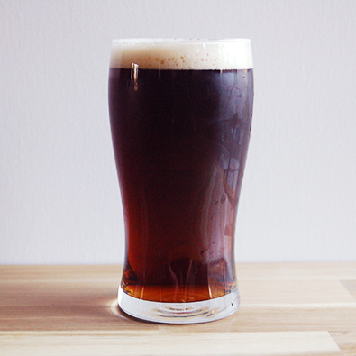

Lil Hoppy Gnome
ABV: 3.6%
Malts: Pilsner, Wheat, Flaked Oats, Munich
Hops: First Gold (UK), Equinox
Yeast: La Chouffe
Serving: Bottle Conditioned
Description: This was hoppy small beer brewed for a local homebrew comp. I wanted to basically mimic La Chouffe's La Chouffeleir.
Tasting Notes:Touch of pine and tropical fruit mixed with spice from the yeast to make a true sessionable Belgian Golden. Firm bitterness from the Equinox hops and really nice lacing and carbonation. This is a unique beer that I'd like to work on dialing in the hop profile for future batches.